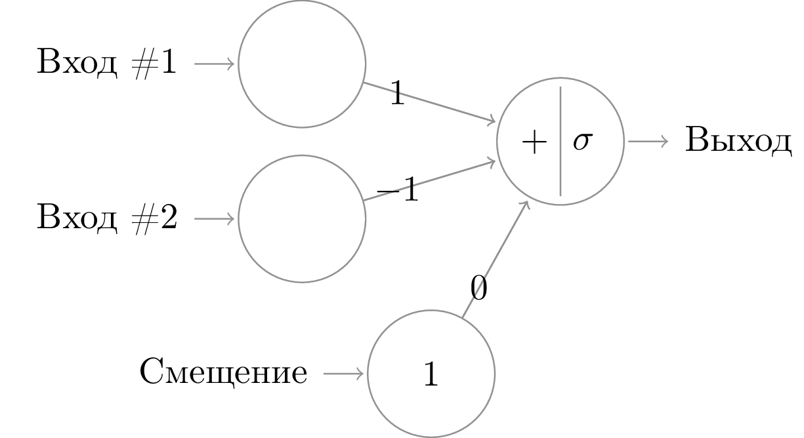
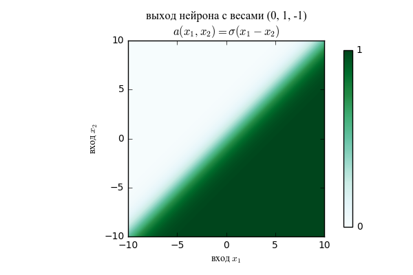
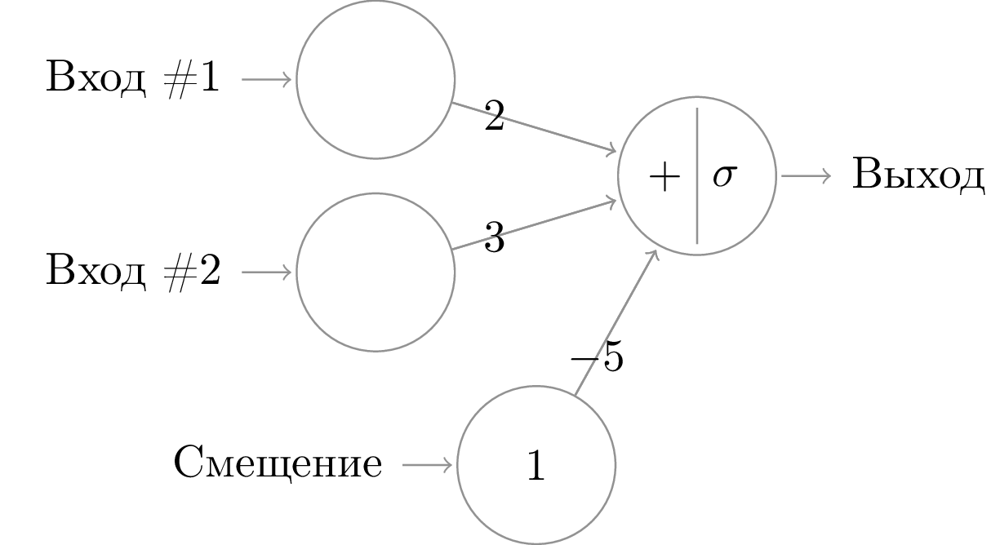
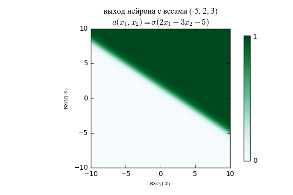

изображение абстрактной нейронной сети
Нейронные сети: принципы, проблемы, что работает, что нет и почему.
Идея, стоящая за созданием нейронных сетей, заключается в том, чтобы промоделировать работу человеческого мозга. Очень общее и условное представление об устройстве и работе клетки человеческого мозга и легло в основу математической модели “нейронная сеть”. Естественный нейрон в коре головного мозга, согласно этому представлению, выглядит следующим образом:
Клетка имеет множество разветвлённых отростков — дендритов, и одно длинное тонкое волокно — аксон, на конце которого находятся синапсы, примыкающие к дендритам других нервных клеток. Каждая нервная клетка может находиться в двух состояниях: обычном и возбуждённном. В возбуждённом состоянии клетка генерирует электрический импульс, который проходит по аксону до синапсов. Синапс при приходе импульса выделяет вещество, способствующее проникновению положительных зарядов внутрь соседней клетки. Синапсы имеют разную способность концентрировать это вещество, некоторые даже препятствуют его выделению — они называются тормозящими. Если суммарный заряд, попавший в клетку, превосходит некоторый порог, клетка возбуждается и генерирует импульс, который распространяется по аксону и доходит до синапсов, что способствует возбуждению следующих клеток. После возбуждения клетки наступает период релаксации — некоторое время она не способна генерировать новые импульсы. Благодаря этому клетки работают по тактам, наподобие дискретных автоматов, а сеть в целом передаёт направленную волну импульсов. (Воронцов 2007)
Естественной формализацией этого описания является следующая модель:
Пусть \(\mathcal X\) — пространство объектов; \(\mathcal Y\) — множество допустимых ответов; \(y^*: \mathcal X \to \mathcal Y\) — целевая зависимость, известная только на объектах обучающей выборки \(X = \left\{ \left(x^{(i)}, y_i\right) \right\}_{i = 1}^\ell, \forall i \in 1\mathbin{:}\ell \:y_i = y^*(x^{(i)})\). Требуется построить алгоритм \(a: X \to Y\), аппроксимирующий целевую зависимость \(y^*\) на всём множестве \(\mathcal X\).
Будем предполагать, что объекты описываются \(n\) числовыми признаками \(\left(x^{(i)}_1, \ldots, x^{(i)}_n\right)\) (такой вектор называется признаковым описанием объекта \(x^{(i)}\)).
Значения этих признаков будем трактовать как величины импульсов, поступающих на вход нейрона через \(n\) входных синапсов. Поступающие в нейрон импульсы складываются с весами \(w_1, \ldots, w_n\). Если вес положительный, то соответствующий синапс возбуждающий, если отрицательный, то тормозящий. Если суммарный импульс превышает заданный порог активации \(w_0\), то нейрон возбуждается и выдаёт на выходе 1, иначе выдаётся 0. То есть нейрон вычисляет следующую функцию:
\[a(x) = \varphi\left(\sum_{j=1}^n w_j x_j - w_0\right), \text{ где } \varphi(z) = \begin{cases}1, z > 0, \\ 0, z \leq 0\end{cases}.\]
В теории нейронных сетей функцию \(\varphi\) принято называть активационной функцией нейрона.
Эта модель естественным образом расширяется: \(\varphi\) может быть не ступенчатой функцией, а, например, сигмоидальной (\(\sigma(z) = 1 / \left(1 + e^{-z}\right)\)), просто линейной (\(\mathrm{id}(z) = z\)) или обрезанной линейной (\(\mathrm{ReLU}(z) = \max\left\{0, z\right\}\)). В общем случае эта модель называется (однослойным) перцептроном.
Согласно той же биологический мотивации способность синапсов пропускать заряд (обозначенная в модели весами) изменяется в зависимости от того, какую задачу решает данный нейрон. Например, нейрон, сравнивающий два своих входа \(x_1\) и \(x_2\) и выдающий 1, если \(x_1 > x_2\), 0 в обратном случае, будет иметь вектор весов \(\left(0, 1, -1\right)\) (или любой другой пропорциональный): см. рис . А линейный классификатор вида \(a(x_1, x_2) = \begin{cases} 1, \text{если} 2 x_1 + 3 x_2 > 5, \\ 0\:\text{иначе}\end{cases}\) представим в виде нейрона с весами (-5, 2, 3): см. рис. .
 
 
Следующая идея состоит в том, что нейроны можно комбинировать. Ведь правда же, ничто не мешает нам результат вычисления одного нейрона рассматривать как входное значение для другого нейрона (как оно и происходит в мозгу)1.
На рис. показана вычислительная схема двуслойной полносвязной нейронной сети. В ней можно выделить несколько похожих конструкций:
изображение абстрактной нейронной сети
Здесь уже куда-то “потерялись” смещения для перцептронов. Обычно их не изображают на схемах, так как это занимает лишнее место, но в вычислениях они, конечно, всё равно присутствуют. Если смещения не “схлопывают” в дополнительный вход, который всегда равен единице (посмотрите на картинку и заметьте, что вход, обозначенный как “Смещение”, отличается от “Входа #1” и “Входа #2” только тем, что мы знаем его значение заранее и это значение постоянно), то обозначают смещение \(j\)-го нейрона на \(l\)-ом уровне как \(b^l_j\). Смещения меняются так же, как и веса \(w^l_{jk}\), и если мы пишем “минимизация по множеству весов”, то смещения в это множество входят.
В этих обозначениях есть некоторая двойственность. В зависимости от контекста \(z^i_j\) и \(a^i_j\) могут означать как сумматорную или активационную функцию, так и её значение на конкретных входных данных.
Таким образом, полносвязная нейронная сеть вычисляет следующую рекуррентную функцию:
\[a^1_ i = \mathtt{input[}i\mathtt{]}\] \[a^l_ i = a^l_ i(z^l_ i) = a^l_ i(\sum_ j w^l_ {ij} a^{l-1}_ j + b^l_ j)\]
(здесь я уже подставила в качестве \(z^l_i\) обычную суммирующую функцию). Активационная функция может быть какой угодно, обычно выбирается в зависимости от требований к области значений ответов: на внутренних слоях сигмоида, на наружных — сигмоида, арктангенс или ReLU. Почему такие — сейчас скажем.
Обобщая эту конструкцию, получаем систему, которую мы видели на первой картинке: \[a^l_ i = a^l_ i \left(\sum_j w^l_ {ij} a^{l-1}_ j + b^l_ j\right)\]
Давайте теперь детально поговорим о том, какие именно функции нейросеть теоретически может вычислить. (Воронцов 2011)
Для однослойной сети у нас есть универсальная аппроксимационная теорема:
T.(Cybenko 1989): Пусть \(\varphi\) – непрерывная ограниченная монотонно возрастающая функция, не являющаяся константой. Тогда \(\forall f \in C\left(\left[0;1\right]^m\right)\) (множества непрерывных в \(\left[0;1\right]^m\) функций) и \(\varepsilon > 0\) \(\exists\: N\in\mathbb{N}, \left\lbrace v_i, b_i\in\mathbb{R}, w_i\in\mathbb{R}^m\right\rbrace_{i=1}^N\) такие, что функция \[F(x) = \sum_{i=1}^N v_i \varphi(w_i^\mathrm{T} x + b_i)\] близка к \(f\) в том смысле, что \(\forall x \in \left[0;1\right]^m \: \left\vert F(x) - f(x) \right\vert < \varepsilon\). Иными словами, множество функций вида \(F(x)\) плотно в единичном \(m\)-мерном кубе.
Функции вида \(F(x)\) – это именно то, что вычисляется перцептроном. То есть для любой непрерывной функции существует сколь угодно точное представление в виде перцептрона. Впрочем, доказательство теоремы не разрешает проблему нахождения этого перцептрона и даже не показывает, насколько широким он должен быть (какое должно быть \(N\)).
Поэтому достаточно естественным является следующий вопрос: а не даст ли нам многослойная нейронная сеть болеее быстрого результата? Обычно здесь даётся мотивационный пример: попробуйте сконцентрировать перцептроны с двумя входами, реализующие функции “и”, “или” и “исключающее или”. Спойлер: “исключающее или” представить в виде однослойного перцептрона не получится.
Для многослойной сети тоже было доказано подобие универсальной аппроксимационной теоремы:
Опр.: Набор функций \(F \subset C(X)\) называется замкнутым относительно функции \(\phi : \mathbb{R} \to \mathbb{R}\), если для любого \(f \in F\) выполнено \(\phi(f) \in F\).
Т. (Горбань и др. 1998): Пусть \(X\) — компактное пространство, \(C(X)\) — алгебра непрерывных на \(X\) вещественных функций, \(F\) — линейное подпространство в \(C(X)\), замкнутое относительно нелинейной непрерывной функции \(\phi\), содержащее константу (\(1 \in F\)) и разделяющее точки множества \(X\). Тогда \(F\) плотно в \(C(X)\).
То есть для любой функции \(g \in C(X)\) можно взять одну нелинейную \(\phi\) и суперпозицией её линейных комбинаций (которой и является нейросеть, если у всех нейронов активационные функции одинаковы) приблизить \(g\) с любой заданной точностью. Конструктивного способа выбрать необходимую суперпозицию линейных комбинаций, впрочем, доказательство теоремы всё равно не представляет.
У нас есть некоторая непрерывная функция \(f: \mathbb{R}^N \to \mathbb{R}^k\), вида которой мы не знаем, а знаем только её значение на конечном наборе точек. Мы хотим построить её равномерное приближение.
NB: вообще-то задача классификации (когда у \(f\) конечное множество значений) решается сетями едва ли не чаще, чем задача регрессии, но с теоретическими обоснованиями здесь хуже.
Вообще мы умеем решать эту задачу с помощью многочленов: любой конечный набор точек можно приблизить многочленом соответствующей степени, говорит нам теорема Вейерштрасса-Стоуна. Но приближение многочленами плохо обобщает зависимость (тут вспоминаем “колбасящиеся” между точками многочлены, картинку сами рисуйте).
Будем строить приближение нейронной сетью с фиксированной архитектурой2, то есть зафиксируем количество слоёв \(L\), количество нейронов на каждом слое \(n_l, l\in 1\ldots L\)3 и все сумматорные и активационные функции \(z^l_j, a^l_j\) для \(j \in 1\ldots n_l, l\in 1\ldots L\) Функция \(a\), вычисляемая сетью при зафиксированной архитектуре сети, зависит только от множества её весов: \(a = a\left(\left\{w_{ij}^l\right\}\right)\) в том смысле, что в зависимости от набора весов \(\left\{w_{ij}^l\right\}\) мы будем вычислять разные функции. Тогда наша задача задаче настройки весов сети, которая заключается в том, чтобы найти набор весов
\[\{w_{ij}^l\} = \mathrm{arg\,min}_{\{w_{ij}^l\}} J\left(f, a\left(\left\{w_{ij}^l\right\}\right)\right),\]
где \(J\) – функция, измеряющая расстояние между \(f\) и \(a\left(\left\{w_{ij}^l\right\}\right)\).
Функция \(f\) нам неизвестна, известен лишь набор её значений в некоторых точках (то бишь примеры входных данных и правильных ответов для них). Поэтому подгоняться веса сети будут так, чтобы приблизить значения функции в известных нам точках.
Возможно, будет проще осознать предыдущие параграфы, если представить в них \(J(f, a) = \frac{1}{N}\sum_{i=1}^N \left\Vert f(x_i) - a\left(\left\{w_{ij}^l\right\}\right)(x_i)\right\Vert^2\), то есть стандартную mean square error. Здесь можно заметить, что задача логистической регрессии на \(p\) предикторов эквивалентна задаче, решаемой перцептроном с сигмоидальной активационной функцией на \(p\) входах.
Ещё раз посмотрим на задачу. Для того, чтобы уменьшить количество обозначений, сумматорную функцию будем считать обычной суммой и подставим сразу MSE в качестве целевой функции. Понятно, что целевая функция может быть любой и может (и должна) меняться от задачи к задаче.
\[\{w_{ij}^l\} = \mathrm{arg\,min}_{\{w_{ij}^l\}} \frac{1}{N}\sum_{i=1}^N \left\Vert f(x_i) - a\left(\left\{w_{ij}^l\right\}\right)(x_i)\right\Vert^2,\]
где \(x_i = \left(x_i^{(1)}, \ldots, x_i^{(m)}\right) \in \mathbb{R}^m\) – \(i\)-й элемент обучающего набора данных, \(f(x_i) = y_i\) – “правильный ответ”, значение искомой функции на \(x_i\),
\[\begin{aligned} a_j^1\left(x_i\right) &= x_i^{(j)}, j\in 1\ldots m, \\ a_j^l\left(x_i\right) &= a_j^l\left(\sum_{k = 1}^{n_{l-1}} w^l_{jk} a^{l-1}_k \left(x_i\right) + b^l_j\right), j\in 1\ldots n_l, l\in 2\ldots L, \\ a\left(\left\{w_{ij}^l\right\}\right)(x_i) &= \left(a_1^L\left(x_i\right), \ldots, a_{n_L}^L\left(x_i\right)\right). \end{aligned}\label{eq:chain_def}\]4
Пример. В случае, когда \(L = 2, n_L = 1\) и \(a_1^2 = \mathrm{id}\), мы получаем задачу линейной регрессии: \[\{w_i, b\} = \mathrm{arg\,min}_ {\{w_ i, b\}} \frac{1}{N}\sum_{i=1}^N \left( \sum_{j=1}^m w_j x_i^{(j)} + b - f(x_i)\right)^2,\] для которой точка минимума находится аналитически. А если при тех же условиях \(a_1^2 = \sigma\), то мы получаем задачу логистической регрессии: \[\{w_i, b\} = \mathrm{arg\,min}_ {\{w_ i, b\}} \frac{1}{N}\sum_{i=1}^N \left(\sigma\left( \sum_{j=1}^m w_j x_i^{(j)} + b \right) - f(x_i)\right)^2,\] и найти точку минимума аналитически уже не получается. Но наша целевая функция всё ещё непрерывная и дифференцируемая по набору весов. То есть оптимизационные методы первого порядка, такие как метод градиентного спуска, к нашим услугам.
Если вы хотите узнать подробнее, как ещё можно искать минимум, можно посмотреть на публикацию на Хабре.
Рассматривая далее целевую функцию как функцию от набора параметров, будем обозначать её \(J(\theta)\), разумея под \(\theta\) все веса и смещения, а под \(\Theta\) – множество всех возможных значений \(\theta\).
Краткое описание метода: возьмём какую-нибудь точку \(\theta_0 \in \Theta\) и пойдём в направлении наискорейшего спуска из этой точки \(\theta_{n+1} = \theta_n - \lambda_n \nabla J(\theta_n)\). Доказательство искать на Википедии.
Для того, чтобы сделать один шаг градиентного спуска, нужно посчитать производные целевой функции по всем весам сети. Для среднеквадратичной ошибки в качестве целевой функции каждый элемент \(\nabla J(\theta)\) будет выглядеть как
\[\frac{\partial J}{\partial w_{ij}^l} = \frac{1}{N} \sum_{k=1}^N \sum_{i=1}^{n_L}\frac{\partial}{\partial w_{ij}^l} \left( \hat y_{ki} - y_{ki} \right),\]
то есть сумма производных для всех входов. То есть для одого шага градиентного спуска нужно пройти по всем данным. Данных может быть ОЧЕНЬ много, так что это не вариант.
Стохастический градиентный спуск предлагает корректировку: выбираем случайное подмножество наблюдений (как вариант, одно случайное наблюдение), считаем производную целевой функции для него и сдвигаемся в направлении антиградиента для этого конкретного наблюдения.
T.(Powell 2007): если градиент целевой функции ограничен, минус градиент в среднем указывает в сторону минимума и градиент не равен нулю не в точке оптимума, то стохастический градиентный спуск сойдётся к оптимальному значению.
Заметим, что “градиент не равен нулю не в точке оптимума” – это очень сильное условие. Это означает, что никаких локальных минимумов/максимумов, никаких сёдел и уж тем более частично постоянных функций.
Самый важный вопрос: как считать-то этот градиент? Ответ: аналитически.
Пусть \(J(\theta)\) – наша целевая функция, значение которой на множестве примеров \(\{x_i\}_ {i=1}^N\) мы хотим минимизировать по множеству параметров \(\theta\). Тогда для каждого параметра \(w_ {ij}^l\) нужно посчитать (см. уравнение )
\[\frac{\partial J}{\partial w_{ij}^l} = \frac{\partial J}{\partial a_i^l} \cdot \frac{\mathrm{d} a_i^l(x)}{\mathrm{d} x} a^{l-1}_ j.\]
Мы уже видим повторяющийся для всех весов нейрона \(i\) на слое \(l\) элемент \(\frac{\partial J}{\partial a^l_i}\), но из чего же состоит он сам? Из
\[\frac{\partial J}{\partial a^l_i} = \sum_{m=1}^{n_{l+1}} \frac{\partial J}{\partial a^{l+1}_ m}\cdot\frac{\mathrm{d} a^{l+1}_m}{\mathrm{d} x} w^{l+1}_{mj}.\]
То есть для того, чтобы посчитать производные на следующем слое, достаточно производные на предыдущем слое (уже неизбежно подсчитанные) умножить на известные константы.
Изложенное выше не включает в себя векторизацию, после которой формулы становятся красивее, но которая утомительнее в выписывании.
Подробное изложение с векторизацией см. в (Nielsen 2015). Хороший пост про численные недостатки этого алгоритма есть у Андрея Карпаты.
Пусть данные описываются векторами размера \(N>>1\). Мы хотим получить их представление размерности \(k\), для чего строим полносвязную нейронную сеть с одним внутренним слоем ширины \(k\) и выходным слоем ширины \(N\). После чего обучаем сеть на множестве примеров, у которых правильный ответ для примера равен самому примеру. Тогда когда мы остановим обучение сети, у нас будет представление наших данных в пространстве меньшей размерности. Причём качество этого представления мы сможем измерить.
tutorial with lots of info – хорошее введение с примерами приложений и бесполезностей
Efficient Estimation of Word Representations in Vector Space Tutorial with net scheme and more on embeddings themselves
Нейросети требовательны к объёму памяти и скорости вычислений, не очень хорошо параллелятся и т.д. При увеличении количества слоёв появляются проблемы с “размазыванием” градиента и с точностью вычислений. Не все данные представимы конечным разумным числом входов (см. “Картинки с большим разрешением”, “текстовые последовательности”, считай требуемую память, умирай). Не гарантируется скорость сходимости, поэтому хочется задавать априорную информацию о структуре взаимоотношений между входами.
wiki find proper literature and pictures
what the hell does it mean and why did I write this?
??? whatever else
Cybenko, George. 1989. «Approximation by superpositions of a sigmoidal function». Mathematics of control, signals and systems 2 (4). Springer: 303–14.
Nielsen, Michael A. 2015. Neural Networks and Deep Learning. Determination Press. http://neuralnetworksanddeeplearning.com.
Powell, Warren B. 2007. «Approximate Dynamic Programming: Solving the curses of dimensionality». John Wiley & Sons.
Воронцов, Константин Вячеславович. 2007. «Лекции По Искусственным Нейронным Сетям», 102–12. http://www.ccas.ru/voron/download/NeuralNets.pdf.
———. 2011. Математические Методы Обучения По Прецедентам (Теория Обучения Машин). http://www.machinelearning.ru/wiki/images/6/6d/voron-ml-1.pdf.
Горбань, А.Н., В.Л. Дунин-Барковский, А.Н. Кирдин, и others. 1998. Нейроинформатика. Новосибирск: Наука. http://ict.edu.ru/ft/003873/neiro.pdf.
Слова “нейрон” и “перцептрон” не являются взаимозаменяемыми. Нейроны могут иметь иной вид (см. LSTM), перцептрон — конкретный подвид нейрона.↩
Тут важно заметить, что вообще-то от архитектуры сети тоже зависит то, насколько хорошо мы сможем приблизить функцию (вспоминаем ещё раз пример про исключающее или), но перебор ещё и по архитектуре мы пока строить не будем.↩
\(n_1 = m\), то бишь первый слой сети размерности входных данных↩
Время вспомнить про двойственность обозначений \(a_j^l\left(\cdot\right)\)↩